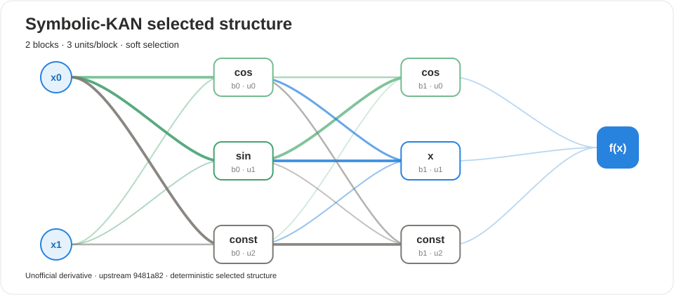

UNOFFICIAL · ATTRIBUTED · AUDITABLE
Symbolic-KAN audit report
Deterministic structure, native candidate evidence, and export metadata.
2blocks
6active units
nohardened
Selected structure

Expression
(((1.81151*(cos(1.81648*(0.139638*(x) + 0.056512*(y) + 0.00498072) + 0)) + -0.000976941)) + (1.7964*(cos(1.79991*(0.31708*((1.81151*(cos(1.81648*(0.139638*(x) + 0.056512*(y) + 0.00498072) + 0)) + -0.000976941)) + 0.581786*((1.76875*(sin(1.7767*(0.860695*(x) + -0.277656*(y) + -0.0227975) + 0)) + -0.0246404)) + 0.128092*((1.80284*(1) + -0.00539271)) + -0.0102734) + 0)) + -0.00802151)) + (((1.76875*(sin(1.7767*(0.860695*(x) + -0.277656*(y) + -0.0227975) + 0)) + -0.0246404)) + (1.80063*(1.80063*(0.400268*((1.81151*(cos(1.81648*(0.139638*(x) + 0.056512*(y) + 0.00498072) + 0)) + -0.000976941)) + -0.555909*((1.76875*(sin(1.7767*(0.860695*(x) + -0.277656*(y) + -0.0227975) + 0)) + -0.0246404)) + -0.209201*((1.80284*(1) + -0.00539271)) + 0.0169394) + 0) + -0.0166895)) + (((1.80284*(1) + -0.00539271)) + (1.77794*(1) + -0.0182566))
Selected units
| Block | Unit | Primitive | Edge | Status |
|---|---|---|---|---|
| 0 | 0 | cos | 0 | active |
| 0 | 1 | sin | 1 | active |
| 0 | 2 | const | 0 | active |
| 1 | 0 | cos | 1 | active |
| 1 | 1 | x | 1 | active |
| 1 | 2 | const | 1 | active |
Metadata
{
"experiment": "laplace-2d-smoke",
"profile": "smoke",
"scope": "paper-described derivative Laplace adapter; not upstream code"
}Scientific-integrity boundary. This report was produced by an unofficial derivative package. It is not an upstream paper result and does not imply endorsement by the original authors.